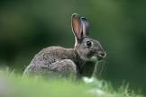
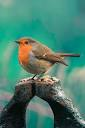
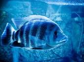
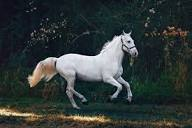

- Cats

- Rabbits 
- Puppy

- Dog
- bird 
- fish 
- horse 
9a,olayiwola street,ogba ikeja,Lagos stateclick me hp
Advantages of pets to human
- reduce strees
- reduce anxiety
- ease lonliness
- encourege exercise and playfulness
- imptove your cardiovascular health
Pet we sell
- Cats
- Dogs
- Birds
- rabbits
- horses
- fish
wierd fun facts about dog
your dog can smell your feeling
While a pet is generally kept for the pleasure that it can give to its owner, often, especially with horses, dogs, and cats, as well as with some other domesticated animals, this pleasure appears to be mutual. Thus, pet keeping can be described as a symbiotic relationship, one that benefits both animals and human beings. As the keeping of pets has been practiced from prehistoric times to the present and as pets are found in nearly every culture and society, pet keeping apparently satisfies a deep, universal human need.